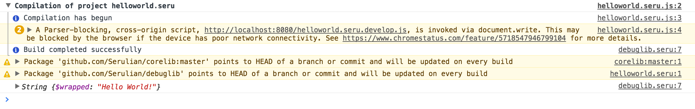
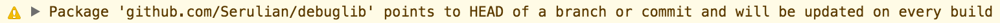

It is tradition to start all introductions to new programming languages with the "Hello World" example:
Running the above code via the playground will display Hello World! in the browser's console.
Run?main or start
in other languages. Instead, this playground is coded to always execute a function named "Run" in the module.
The above example makes use of a few key features of Serulian:
Follow the installation instructions to install the toolkit
To start the new project, create a new source file in an empty:
touch helloworld.seruThis file will define the
helloworld module. Paste the above code into the file to get:
To run the Serulian project, we need to write an HTML file that will include the generated source code. Create a new empty HTML file in the same directory at the source file:
touch helloworld.html
We then need to add a <script> tag to include the compiled Serulian code, as well as another to start the project.
For this project, we will make use of the Serulian develop mode, which allows for fast edit-refresh development by running the compiler behind a web server which recompiles on every refresh. To reference the source, simply add to the file:
.then stuff?window.Serulian global promise, which, when fulfilled, indicates that all initialization has occurred successfully. To prevent Serulian names from leaking into the global namespace (window in web browsers), the argument to the resolved promise is an object containing all modules defined in Serulian, relative to the root source file given to the build or develop command.
The last step before viewing the file in our browser is to run the compiler and toolkit in develop mode. To do so we run:
serulian develop helloworld.seru
This prints:
Serving development server for project helloworld.seru on :8080 at /helloworld.seru.js
Hitting the URL http://localhost:8080/helloworld.seru.js will cause the compilation to run and the resulting source to be written to the document.
Now that the compiler is running in development mode, we can view our running project by opening the helloworld.html file in our web browser. The status of the compilation (including any errors) will be displayed in the console, followed by the program running once it has successfully compiled:

To make changes to the project, simply edit the helloworld.seru file and refresh the page.
You may have noticed the following warning displayed in the console for the project: 
This warning is appearing because the import of the remote package github.com/serulian/debuglib is unfrozen.
To remove this warning we can freeze the debuglib package at its current version:
serulian imports freeze helloworld.seru github.com/serulian/debuglib
After running the command we should see something like this in helloworld.seru:
Since the debuglib package supports semantic versioning we can instead use the upgrade command to upgrade the import to a supported stable version:
serulian imports upgrade helloworld.seru github.com/serulian/debuglib
After running the command we should see something like this in helloworld.seru:
Now that we've fixed our import, it is time to add another module to the project. To do so, simply add another empty Serulian source file in the same directory as our helloworld.seru:
touch anothermodule.seru
Let's update our hello world example so it gets its value from our other module. First, let's define a new variable in anothermodule.seru:
Next, we need to import the variable from our new module in the helloworld.seru module:
And finally, we replace the call to Log with our variable:
Refresh the page and viola!
Now that we have a multi-module project working, the next step is starting a component so we can interact with the page's DOM.
While Serulian does not define a preferred means of interacting with the DOM, there is a small component and Virtual DOM library found in the Serulian GitHub namespace that makes basic interaction pretty straightforward.
To begin, let's remove our existing other module (so we can work in the playground if we choose) and import the component and virtual DOM libraries:
Next, we want to define a Component to display our message in the DOM. A component is a class that has a Declare constructor and a Render function:
If we run the above, we still see hello world! printed to the screen and no DOM. The next step for us is to tell Serulian to render the component to the DOM. To do so, we import references to the DOM, add an element and render our component into it:
Viola! Now we have our component rendering into the body of the document!
Now that we have a component written (and rendering), the next step is to use Serulian Markup Language (SML) to have our component render using a more complicated structure. To start, we import the Div function and use it to declare a more decorated message:
Note how SML allows us to declare the structure of our component in an HTML-like fashion.
Let's extend our component to make the message extensible! To do so, we add support for props to our component by declaring a new struct with the properties we accept, and add an SML expression to render it:
Note how we use an inline expression {this.props.message} to add the message to the DOM.
While our component can print a cool (and varied!) message, it would be cool if we could change the component in response to a user's action. To do so, we need to create a stateful component.
To create a stateful component, we need to import UpdateComponentState and add a StateUpdated function to our component:
In the above code, we've modified the component to save a state struct, which holds the state of the component. We then added a Button, which when clicked, invokes the updateMessage method. This method changes the state of the component via UpdateComponentState, causing the component to be re-rendered with the updated message!
And there you have it! A super basic but working single-page application, written in Serulian!
To continue, we recommend reading the guide.